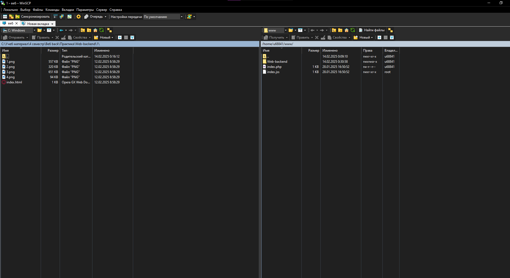

Подключение через Putty с выводом данных о сервере, версии и ядро Линукса - ubuntu, использовании памяти сервера, количества текущих процессов, ipv4 адреса и последним подключением к серверу

Ping, показывает время задержки передачи данных от сервера к пользователю

A-записи показывает ipv4 адрес доменов и пользователя

MX-записи показывает настройки почтового сервера для имени домена

Whois показывает владельца сервера и данные о нем

WinSCP показывает файлы на сервере и на ПК
